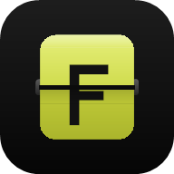

Privacy policy
Focus is a timer and study tracker. It is built so that your data never leaves your device.
What Focus stores
Your categories, logged sessions and settings are saved in your browser's storage on your own device. They are not sent to us or to anyone else. Uninstalling the app or clearing its data deletes them.
What Focus does not do
- No accounts, sign-in or cloud sync.
- No analytics, advertising or tracking of any kind.
- No personal information is collected, shared or sold.
Permissions
- Notifications (optional): used only to tell you when a timer or Pomodoro phase ends.
- Background audio: while a clock runs, Focus can play a silent or ambient track so the timer keeps working with the screen off. Nothing is recorded.
- Keep screen on (optional): stops the screen from sleeping while a clock runs.
Backups
If you use Back up or Export CSV in Settings, a file is saved to your device. What you do with that file is up to you.
Fonts
The digit fonts are downloaded from Google Fonts the first time the app runs. Google receives a normal web request (such as your IP address) when that happens; see Google's privacy policy for details.
Children
Focus does not knowingly collect any information from anyone, including children.
Contact
Questions? Open an issue at github.com/kamalish07/focus.